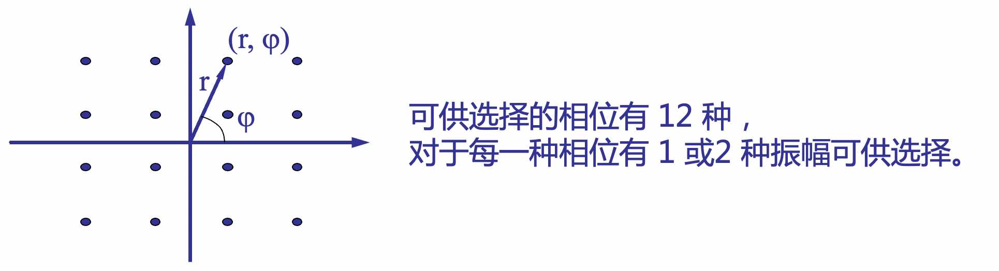
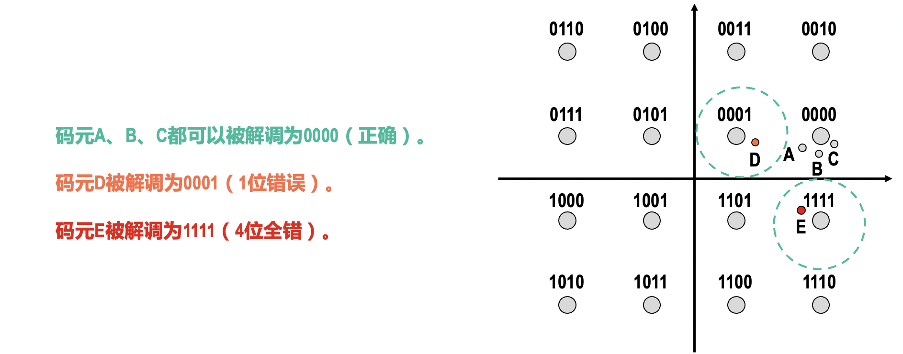
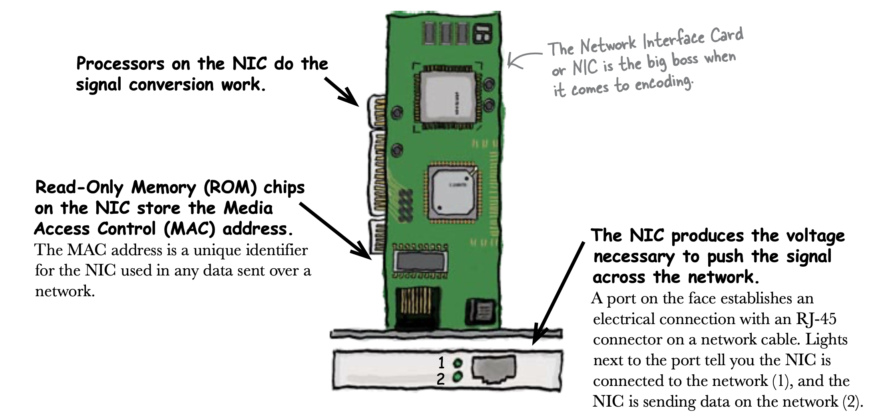
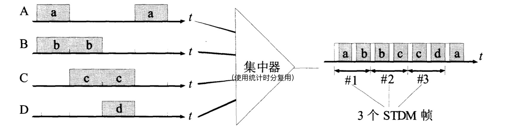
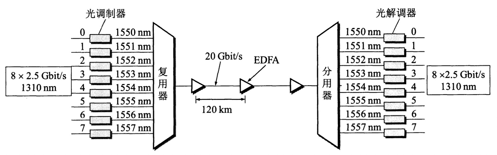
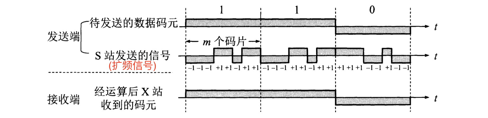

物理层
物理层
物理层的主要任务就是：确定传输媒体接口的特性，包括：
- 机械特性：接线器的形状和尺寸、引脚数目和排列、固定和锁定装置等。
- 电气特性：在接口电缆的各条线上出现的电压的范围、阻抗匹配的情况、传输速率、距离限制等。
- 功能特性：某条线上出现的某一电平的电压的意义、各信号线的作用等。
- 过程特性：对于不同功能的各种可能事件的出现顺序、传输比特流的操作过程等。
物理层考虑的是如何在连接各种计算机的传输媒体上传输比特流，而不是具体的传输媒体、物理设备。物理层尽可能地屏蔽掉不同传输媒体和通信手段的差异，为数据链路层提供一个统一的数据传输服务。
关于数据通信
一个数据通信系统可划分为三大部分：源系统、 传输系统和目的系统。

信号调制
源点发出的数据（基带信号）要进行调制后才能在传输系统中进行传输。调制可分为2类：
-
基带调制（编码）：仅仅对基带信号的波形进行变换，即把数字信号转化为另一种数字信号，变换后的信号仍是基带信号。

-
带通调制：使用载波进行调制，转化为模拟信号。

另外还有多元制的 振幅 相位 混合调制方式（由于载波的频率和相位是相关的（频率是相位随时间的变化率），因此频率、相位之间不能进行混合调制），例如正交振幅调制QAM。下图为16-QAM：

由于 16 种不同码元 可以用来表示 长度为4的二进制编码，因此此处每个码元都可对应于一种 4 bit 的编码。
若有 种不同的码元，则可以用来表示长度为 的二进制编码，即：一个码元就对应着一种 位比特串。
反之，若一个码元可以用来表示长度为 的比特串，这也就意味着存在 种不同的码元。
每个码元和比特串之间的对应关系也不是随便定义的，一般采用格雷码，即任意2个相邻码元之间只有1个比特不同。如此，即使解调发生错误，也不会错的太多。

各种信号的调制和解码由计算机中的 网卡 完成（Network Interface Card，NIC）。

如果信号是通过以太网传送的，那么使用的就是曼彻斯特编码（以太网10BASE-T标准规定）。转化的过程为：
- CPU将数据以 不归零编码（NRZ） 的形式发送给网卡
- 网卡将数据与时钟信号结合，生成曼彻斯特编码。
- 将信号通过以太网传输。
- 接收方的网卡将收到的曼彻斯特编码转换为不归零编码，然后通知CPU收到数据。
并非所有以太网都使用曼彻斯特编码，100Mb/s的以太网使用 4B/5B 编码规则，千兆以太网使用 8B/10B 编码规则…
关于信道
-
奈氏准则：在带宽为 Hz的低通信道中，码元传输的最高速率为 （码元/s，或称波特），超出就会出现码间串扰。
-
信噪比：，记为：。
若以 分贝(dB) 为单位，则 dB（分贝是一个纯数学的单位）。
信道的极限信息传输速率： （bit/s）。
奈氏准则指出了码元传输速率（波特率）的上界，若想要提高信息传输速率就必须使每一个传输的码元能够代表更多比特的信息：
但这种方法也是局限的，一方面是因为当一个码元代表的比特数较大时，解码技术难度很大，另一方面是此时必须使信噪比达到相应的数值（否则噪声会影响接收端对码元的识别），而这有时是无法做到的。

传输媒体
传输媒体并不属于物理层的范围，它还在物理层之下，有人称其为第0层。


传输方式
串行传输与并行传输

计算机内部的数据传输一般采用并行传输，而数据在通信线路（传输媒体）上的传输方式一般是串行传输。
计算机中的网卡同时具有串行传输与并行传输的功能，当计算机通过其内部的网卡将数据发送到传输媒体上或从传输媒体上接受数据时，网卡起到的一个重要作用就是并/串转换。

同步通信与异步通信
异步通信是一种很常用的通信方式。异步通信在发送字符时，所发送的字符之间的时间间隔可以是任意的，而接收端必须时刻做好接收的准备。由于发送端可以在任意时刻开始发送字符，因此必须在每一个字符的开始和结束的地方加上标志，即加上开始位和停止位，以便接收端能够正确地将每一个字符接收下来。
异步通信的好处是通信设备简单、便宜，但传输效率较低（因为开始位和停止位的开销所占比例较大）。
异步通信也能以帧作为发送的单位，这时，帧的首部必须设有一些特殊的比特组合，使得接收端能够找出每一帧的开始（这称为帧定界）。帧定界还包含确定帧的结束位置，这有两种方法，一种是在帧的尾部设有某种特殊的比特组合 来标志帧的结束，另一种是在帧首部中设有帧长度的字段。
注意：在异步发送帧时，并不要求发送端对帧中的每一个字符都必须加上开始位和停止位后再发送出去，发送端可以在任意时间发送一个帧，而帧与帧之间的时间间隔也可以是任意的。 在一帧中的所有比特是连续发送的。

同步通信的通信双方必须先建立同步，即双方的时钟要调整到同一个频率。收发双方不停地发送和接收连续的同步比特流。有两种不同的同步方式，一种是使用全网同步，用一个非常精确的主时钟对全网所有结点上的时钟进行同步；另一种是使用准同步， 各结点的时钟之间允许有微小的误差，然后采用其他措施实现同步传输。
位同步 与 帧同步
在数据通信中最基本的同步方式就是位同步（bit synchronization，比特同步）。 它是指接收端时钟己经调整到和发送端时钟完全一样，因此接收端收到比特流后，就能够在每一位的中间位置进行判决。位同步的目的是为了将发送端发送的每一个比特都正确地接收下来，这就要在适合的时刻（通常就是在每一位的中间位置）对收到的电平进行判决（根据事先己约定好的规则，例如，电平若超过一定数值则为
1, 否则为0）。
但有时仅有位同步是不够的，因为数据可能以帧为单位进行发送。若某一个帧有差错，就需要重传这个出错的帧。因此接收端必须准确地将每个帧区分出来，即一个帧应当有明确的界限（帧定界符，即一些特殊的比特组合）。接收端在收到比特流后，必须能够正确地找出帧定界符，以便知道哪些比特构成一个帧。接收端找到了帧定界符并确定帧的准确位置，就是完成了帧同步（frame synchronization）。
同步通信方式的帧同步在电信网中使用得非常广泛。帧同步的任务就是使接收端能够从收到的连续比特流中确定出每一个时分复用帧的位置。
而异步通信方式的帧同步则在计算机网络中使用得较多。数据帧在接收端出现的时间是不规则的，因此在接收端必须进行帧定界。但帧定界也常称为帧同步， 因此当我们看到“帧同步”时，应当弄清这是同步通信中的帧同步，还是异步通信中的帧定界。


在异步通信时，接收端即使找到了数据帧的开始处，也还必须将数据帧中的所有比特逐个接收下来，因此接收端必须和数据帧中的各个比特进行位同步（这就是异步通信中的同步问题）。毕竟如果接收端不知道每一个比特要持续多长时间，那么又如何将一个个比特接收下来呢？因此，**不管是同步通信还是异步通信，要想接收比特块中的每一个比特，就必须和比特块中的比特进行位同步。**不过在异步通信中，位同步的方法和同步通信时并不完全一样。
单工通信、半双工通信、全双工通信

单工通信只需1条信道，而半双工、全双工通信都需要2条信道。
注意：单工电台中的“单工”表示的是半双工。
信道复用技术

在发送端使用一个复用器，就可以用一个共享信道传送原来的多路信号，在接收端使用分用器，把合起来传输的信息分别送到相应的终点。复用器和分用器总是成对地使用。
频分复用（FDM）
若有 路信号要在一个信道中传送，可以使用调制的方法，把各路信号分别搬移到适当的频率位置，各路信号就在自己所分配到的频带中传送，彼此不产生干扰。

频分复用的各路信号在相同的时间占用不同的频带。
在使用频分复用时，若每个用户占用的频带宽度不变，则当复用的用户数增加时，复用后的信道的总频带宽度就随之增大。
时分复用（TDM）
将时间划分为等长的段，称之为时分复用帧（TDM 帧）。将每个TDM帧均分为若干小段，每一路信号在每个 TDM 帧中占用固定序号的小段，则每路信号都会周期性地出现，周期就是 TDM 帧的长度。

时分复用的各路信号是在不同的时间占用同样的带宽。
在使用时分复用时，每个TDM帧的长度是不变的，当进行时分复用的用户变多时，则每一个用户分配到的小段的宽度就会变小。
时分复用更有利于数字信号的传输。
统计时分复用（STDM）
当使用时分复用传送计算机数据时，由于计算机数据的突发性，一个用户对已经分配到的子信道的利用率一般是不高的。当用户在某一段时间暂时无数据传输时，那就只能让所分配到的子信道空闲着，其它用户即使需要发送数据，也不能使用这些空闲的子信道。

统计时分复用是一种改进的时分复用，它能明显地提高信道的利用率。

使用 STDM 帧来传送数据，每一个 STDM 帧中的小段数小于连接在集中器上的用户数。各用户有了数据就随时发往集中器的输入缓存，然后集中器按顺序依次扫描输入缓存，把其中的数据放入 STDM 帧中。当一个帧的数据放满了，就发送出去。可见，STDM 帧不是为每个用户固定分配子段，而是按需动态地分配。
在输出线路 上，某一个用户所占用的小段（时隙）并不是周期出现的，因此统计时分复用又称为异步时分复用，而普通的时分复用称为同步时分复用。
由于 STDM 帧中的时隙并不是固定地分配给某个用户的，因此在每个时隙中还必须有用户的地址信息，这是统计时分复用不可避免的额外开销。
波分复用（WDN）
波分复用就是光的频分复用。用一根光纤来同时传输多个频率很接近的光载波信号，从而使光纤的传输能力大大提高。
由于光载波的频率很高，因此习惯上用波长而不用频率来表示所使用的光载波，“波分复用”由此而来。
另外，别忘了： （波速 = 频率 × 波长）。
最初人们只能在一根光纤上复用两路光载波信号，这种复用方式称为波分复用（WDM）。随着技术的发展，在一根光纤上复用的光载波信号的路数越来越多，于是就使用了密集波分复用（DWDM）这一名词。

例如，8路传输速率均为2.5 Gbit/s的光载波(其波长均为1310nm)，经调制后，分别将波长变换到1550~1557nm，每个光载波相隔1nm（对于密集波分复用，光载波的间隔一般是 0.8 nm 或 1.6 nm）。这 8 个波长很接近的光载波经过光复用器（此处又称合波器）后，就在一根光纤中传输。 因此在一根光纤上数据传输的总速率就达到 8 x 2.5 Gbit/s = 20 Gbit/s。
光信号传输一段距离后就会衰减，因此必须对衰减了的光信号进行放大才能继续传输。EDFA是一种光放大器，它不需要进行光电转换而直接对光信号进行放大。两个光纤放大器之间的光缆线路长度可达 120 km。
人们总是在一根光缆中放入尽可能多的光纤，然后对每一根光纤使用密集波分复用技术。因此对于具有 100 根速率为 2.5 Gbit/s 光纤的光缆，采用 16 倍的密集波分复用，最终得到一根光缆的总数据率为 100 x 40 Gbit/s = 4 Tbit/s。
码分复用（CDM）
为每个用户（站）分配一个长度为的（通常m=64或128） 由和构成的 码片序列（chip sequence），需要满足：
-
不同用户的的码片序列各不相同且互相正交
-
码片序列和自己的规格化内积为 ，和反码序列的规格化内积为
当用户要发送比特1时，就发送其码片序列（）；当用户要发送比特0时，就发送其码片序列的反码（）。
在实际传输时，码片序列中的 以
1传输， 以0传输。原本只需发送 个比特，但此时却要发送 个比特；当要发送长度为 的二进制串时，则实际要发送的长度为 。数据率需要提高到 倍。
假定有 个站在向X发送信息，不妨设每个站都向X发送了 位比特，X会先将 个序列叠加在一起，得到一个长度为 的序列 （若发送1，则；若发送0，则）。现在X要获取S发送来的信息（前提：X知道S的码片序列），则将所得序列与 求规格化内积：
可见，计算结果中只剩下了 S 发送的信息。
- 若 ，则说明S发送的是
1 - 若 ，则说明S发送的是
0 - 若 ，则说明S没有发送信息

由于各用户的码片序列不同，因此每一个用户可以在同样的时间使用同样的频带进行通信 而不会产生干扰。

宽带接入技术

ADSL 的优点： 可以利用现有电话网中的用户线，不需要重新布线。用户可以根据自己的情况使用不同速率的宽带接入；缺点：对用户线的质量有较高的要求。如果用户住宅距离电话交换局较远，或线路的噪声较大，那么宽带接入的速率就会适当地降低。
HFC 的优点：覆盖面很广，并且其带宽也很高，可以传送很高速率的数据；缺点：必须对现有单向传输的有线电缆进行改造，变为可双向通信的电缆。用户家中需要增加一个机顶盒，用来观看电视和传送上行信号。此外为了解决信号传输时有衰减的问题，在有线电缆中每隔一定距离就要加入一个放大器，大量放大器的接入将使整个网络的可靠性下降。
FTTx 的优点：数据率很高，且通信质量最好；缺点：大量用户使用光纤接入还需要较多的建设资金。